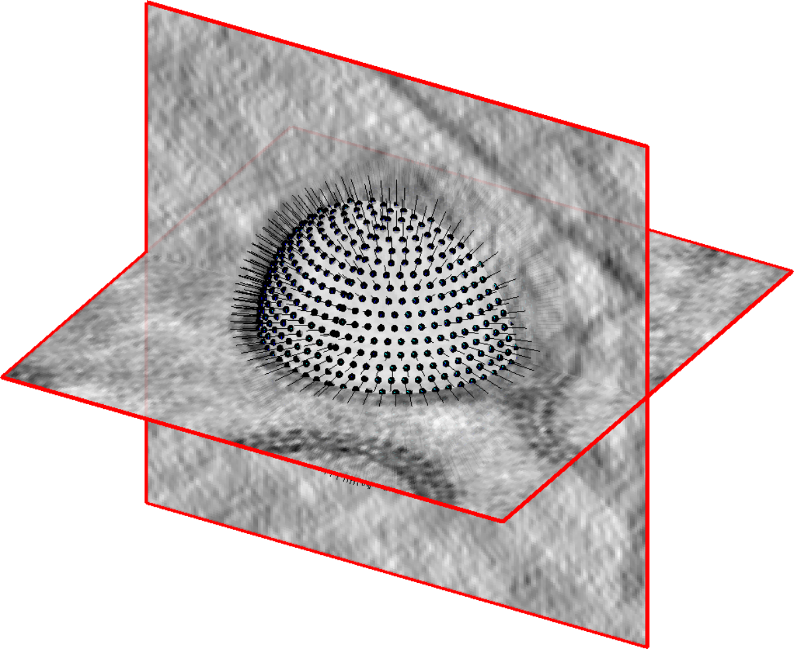
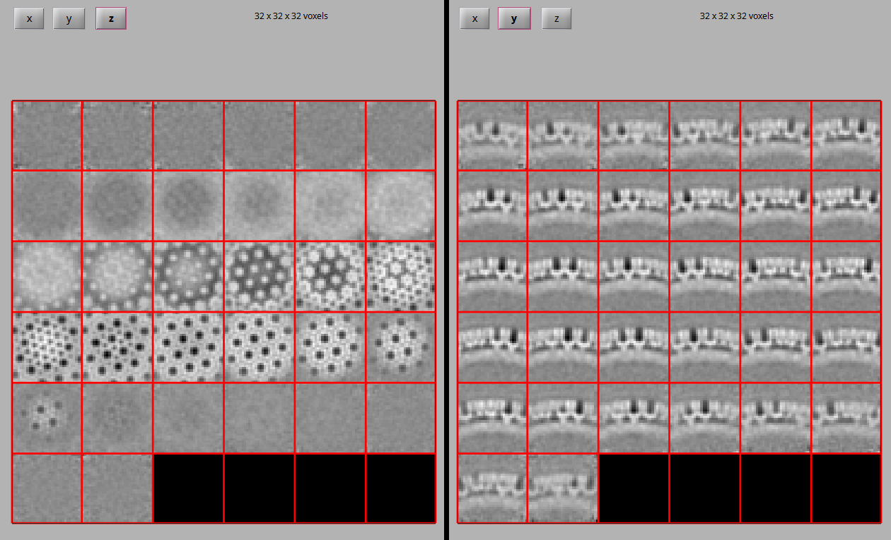

Initial model generation
Contents
Initial model generation#
{kind=link}
Now that the Dynamo catalogue contains initial estimates for the positions and orientations of our particles, we need to obtain an initial model of our lattice structure which will later allow us to find more accurate estimates of the positions and orientations of our particles for the whole dataset. For this, we will work on a small subset of the VLPs.
With data of such good quality and so many particles per VLP, two of our vesicle models should be more than enough for generating a good initial model of the underlying lattice structure.
When choosing an initial subset, it can be a good idea to choose VLPs with different defoci. This ensures that nodes of the CTF are at different spatial frequencies within the subset and thus no region of Fourier space should be particularly undersampled. The RELION team put together a useful web app which can be used to visualising the effect of changing CTF model parameters.
Choosing a subset which contains all available views of the particle is also important, ensuring maximum coverage of Fourier space in a resulting reconstruction
From the Overview tab in Warp, we quickly see that TS_01 and TS_03 have significantly different defoci, so we choose to use one vescicle from each of these tomograms.
Extracting a subset of particles#
Extract particles from your Dynamo catalogue with a sidelength of 32 following this mini-tutorial. To make things faster, for now we can extract particles from one vesicle in TS_01 and one in TS_03. We call this volume list file created at this stage inimodel.vll) and extract a data folder called inimodelData.Boxes.
Tip
Later, we will perform an alignment on particles from every VLP. You can save some time by launching a separate particle extraction for the whole dataset at this stage.
Aligning the particles#
Once the particle volumes are extracted for our two VLPs, we want to perform a first rough alignment to see how the particles align and average.
We run dcp from MATLAB to open the “Dynamo current project” GUI. This GUI is designed to be used in a sequential way: we will need to provide a few parameters before launching the project.
For a full tutorial on how to setting up a simple subtomogram averaging project in Dynamo, click here.
In our case, we set it up as follows:
project
: we call our project inimodel
particles
: the inimodelData.Boxes Dynamo data folder.
table
: the inimodelData.Boxes/crop.tbl particle metadata (table) file. When we cropped particles in the Dynamo catalogue, it created this metadata file for us and puts it inside the data folder. When selecting your table file, click look inside data folder and pick the crop.tbl file.
template
: since we don’t have one, we generate one from a subset of our particles. Using 500 particles at this step is a good starting point. This will generate a reconstruction from 500 particles using our initial alignments from the vesicle model stored in the crop.tbl file.
{kind=link}
masks
: Use default masks will give us appropriate masks at this stage that cover the full extent of our 32px box. At this stage, we aren’t very sure of our particle positions and orientations as they haven’t undergone any alignment. We want our mask to include the whole box so that signal from multiple neighbouring particles in the lattice can help to drive initial alignments.
numerical parameters
: set the numerical parameters for the alignment procedure as shown below. Check out the mini-tutorial for a more in-depth explanation. At this stage, we don’t enforce symmetry during refinement. We hope that any symmetry present should appear after aligning our particles.
{kind=link}
We perform initial alignments with only local out-of-plane searches (defined by the cone range parameter), making use of the initial estimates from our geometrical models.
{kind=link}
computing environment
: this will depend on your computing environment, including number of available CPUs/GPUs. We typically run projects in the gpu_standalone modus on 4 GPUs. Running in the standalone modus allows you to continue with other work in the matlab shell while the alignment project runs. In this modus, the number of CPU cores should be 1. The number of CPU cores used during averaging can be changed to the number of logical CPU cores on your machine. Specific GPUs can be selected by their index as seen in nvidia-smi.
check and unfold
: run a sanity check to make sure the project seems correctly setup, then unfold to prepare an executable for the alignment project. If running a project on a remote machine without graphical access, a project can be set up locally and sent to the remote machine as a tarball. For information on this, please see this wiki page.
We can now run the executable. To do so, open the dynamo directory in a terminal and run:
source $DYNAMO_ROOT/dynamo_activate_linux_shipped_MCR.sh
to prepare the environment. Then, simply execute:
./inimodel.exe
Assessing the results#
We can look at the result of our first alignment project using tools from the dcp GUI under show. Alternatively, the file containing the average can be found at dynamo/inimodel/results/ite_0008/averages/average_ref_001_ite_0008.em and visualised with any volume visualisation tool.
In contrast to our previous reconstruction from particles with initial estimates for positions and orientations, in this map we clearly see a hexagonal lattice starting to take shape, containing 2-, 3- and 6-fold symmetry axes.
{kind=link}
Aligning and centering the 6-fold symmetry axis#
In order to take advantage of the symmetry present in the structure during refinement we first need to recenter the average on its 6-fold symmetry axis and align that axis along the z axis of our volume.
To center and align the 6-fold symmetry axis, we will use a script provided with this tutorial, align_symmetry_axis.m. The script generates a synthetic template of a lattice with a 6-fold symmetry axis centered and aligned along the z-axis. The volume from our first subtomogram averaging experiment is then aligned to this synthetic template and C6 symmetry is applied. This produces an initial model with the symmetry axis correctly aligned for further experiments.
align_symmetry_axis
v = dread('average_ref_001_ite_0008.em');
rod_radius = 2;
rod_height = 4;
membrane_thickness = 15;
box_size = 32;
% Create fake membrane
mr = dpktomo.examples.motiveTypes.Membrane(); % create membrane object
mr.thickness = membrane_thickness; % choose thickness of membrane
mr.sidelength = box_size; % choose sidelength of box
mr.fillData();
mem = mr.getData().*-1;
% Create cylinder in center to represent hole in center of structure to align to
cyl = dynamo_cylinder([rod_radius, floor(rod_height / 2)], 32, [16, 16, 21]);
cyl = dynamo_sym(cyl, 9);
cyl_shift = dynamo_shift_rot(cyl, [8, 0, 0], [0,0,0]);
cyl_shift(isnan(cyl_shift)) = 0;
cyl_shift_sym = dynamo_sym(cyl_shift, 6) .* 6;
% Combine membrane and hole
template = mem - cyl - cyl_shift_sym + 1;
% normalise both volumes
template = dynamo_normalize_roi(template);
v = dynamo_normalize_roi(v);
% Align average to synthetic template
sal = dalign(v, template ,'cr',60,'cs',20,'ir',90, 'is', 30, 'rf', 5, 'dim', box_size,'limm',1,'lim',[4,4,4]);
v_aligned = sal.aligned_particle;
v_aligned_c6 = dynamo_sym(v_aligned, 'c6');
dmapview({v, template, v_aligned, v_aligned_c6})
% write out averages
dwrite(template, 'synthetic_template.em');
dwrite(v_aligned, 'average_aligned_along_z.em');
dwrite(v_aligned_c6, 'average_aligned_along_z_c6.em');
To run the script, open dynamo/inimodel/results/ite_0008/averages in Matlab. Copy the script into this directory, and execute it by running align_symmetry_axis. Once the script has finished, compare the initial average, the template, the aligned average and the symmetrised aligned average to check that the alignment worked as intended.
{kind=link}
We now have an initial model with the 6-fold symmetry axis aligned to the center of the volume. We can use this initial model to obtain good estimates for particle positions and orientations of HIV-1 CA-SP1 hexamers for the whole dataset.